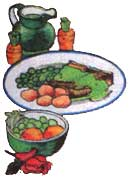
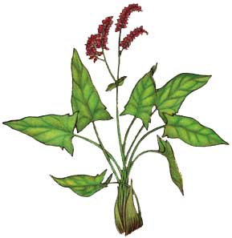
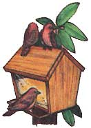

Lately, more and more people have begun to understand just how limited-in both variety and nutritional value-our "modern" diets have become. This realization has sparked a new and widespread interest in the culinary and therapeutic uses of herbs... those plants which-although not well-known today-were, just one short generation ago, honored "guests" on the dinner tables and in the medicine chests of our grandparents' homes. In this regular feature, MOTHER will examine the availability, cultivation, and benefits of our "forgotten" vegetable foods and remedies... and-we hope-help prevent the loss of still another bit of an ancestral lore.
Few herbs demonstrate the need for scientific classification and nomenclature as well as do the sorrels (members of the Ru mex species). Their common names overlap, and the descriptions found in garden books-if they're unaccompanied by good pictures-are often unclear.
Garden sorrel (R. acetoso) is also called common sorrel, French sorrel, cuckoo's sorrow, and green sauce. It's one of the two Rumex species regularly cultivated, the other being R. acutatus (which is also known, unfortunately, as French sorrel). The two share the same basic characteristics, but R. acutatus has a somewhat milder and juicier-albeit smaller-leaf. Like all true sorrels, these two have a high binoxalate of potash content . . . which makes their foliage strongly acidic. Because of this, one should "go easy" when ingesting the plants or their juices, since the consumption of large quantities may result in internal irritation.
As the name "green sauce" implies, the leaves of garden sorrel can be mashed, mixed with vinegar and sugar, and served as a sauce for meat, fish, or fowl. Moreover, their tangy flavor makes them a welcome addition to salads and to otherwise uninteresting fricassees and ragouts. When removed from their stalks and simmered gently in a little water, the leaves can also be served-with butter, salt, and pepper-as a tasty substitute for spinach. Perhaps their most famous culinary use, however, is in the delicious French "soupe aux herbes".
Herbalists classify sorrel as a refrigerant, claiming that the plant's juice, or a tea made from the leaves, can be used to reduce fever. Sorrel tea has also long been used as a spring tonic . . . as a treatment for scurvy and as a medication to ease the pain of sore throats. Furthermore, both the juice and the tea are said to help cure kidney stones, as well as bladder and liver complaints. When applied externally, the tea serves as a healing poultice and is said to be effective in the treatment of wounds, itching, and the symptoms of ringworm. Garden sorrel has also been used as a curdling agent for milk . . . as a dye source (yellow green from the leaves, red from the roots) . . and in the form of its chemical salt-as a bleaching agent for stains.
Rumex acetosa is a perennial and can be easily propagated from seed (in the spring) or by root division (in the spring or fall). It grows from one to three feet high, preferring full sun and moist, rich soil. The lower leaves spring from a central cluster and have long, slender stems, while the upper foliage clasps the flower stalk. The 3"- to 5"-long fronds are oblong, have two arrowhead-like barbs at the stem end, and may become reddish with age.
Sorrel flowers-which are small, bell shaped, and either yellow green or reddish-are clustered in terminal spikes. They generally bloom in May, and are followed by quantities of seed that is relished by finches. (Unless you plan to save the kernels for new plantings, the flower heads should be picked before they ripen in July: This will encourage the growth of new leaves . . . and prevent new seedlings from taking over the garden plot.)
The leaves tend to taste mildest in spring, but can be harvested at any time during the growing season. (They do lose their flavor when they're dried, though, so they're best used fresh or frozen.)
You can order this versatile herb from [1] Well-Sweep Herb Farm, Dept. TMEN, 317 Mt. Bethel Road, Port Murray, New Jersey 07865 (catalog 75d), [2] Sandy Mush Herb Nursery, Dept. TMEN, Route 2, Surrett Cove Road, Leicester, North Carolina 28748 (catalog $1, refundable), or [3] Taylor's Herb Garden, Inc., Dept. TMEN, 1535 Lone Oak Road, Vista, California 92083 (catalog $1).
|
 Garden Sorrel makes a piquant green sauce for meat |
 Sorrel seed is relished by finches |
 |